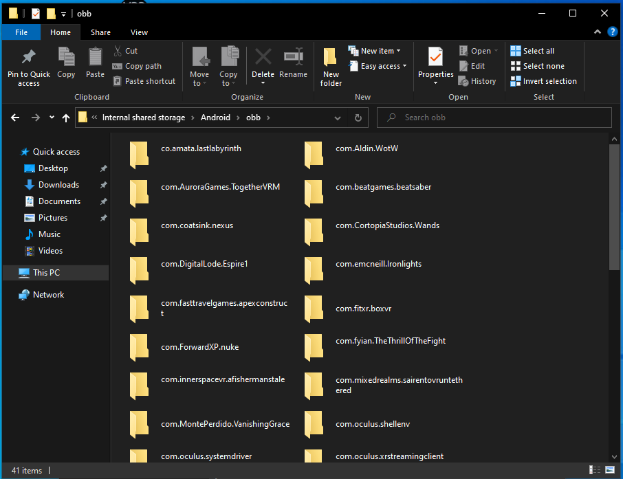
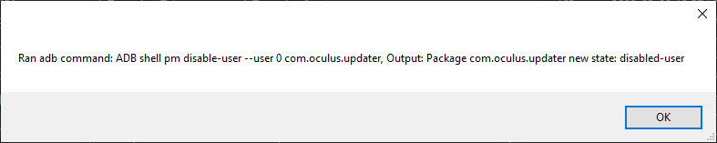

Help
FAQ: Sideloading
Facebook Telemetry
Blocking telemetry is a HORRIBLE idea. It may brick your headset services. Byte the bullet and proceed with caution.

Bans
No one has been banned for piracy on Quest 1 or 2 yet. You're safe on your main account for now.
Black screen or stuck loading
Check if your game came with an OBB folder. Place the folder inside /Android/obb.

Disable Firmware Updates
Press CTRL+R in Rookie and send this command: shell pm disable-user --user 0 com.oculus.updater

Is Rookie a Virus?
No, it's open source! Detecting tools as viruses is a common false positive.